Pikachu
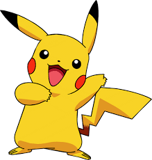Pikachu is an electric-type Pokémon, which attacks using electricity from two red pouches on its cheeks.
LEARN MOREBart
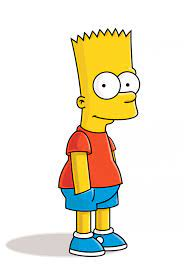His chalkboard gags in the opening sequence; his prank calls to Moe; and his catchphrases "Eat my shorts", "¡Ay, caramba!", "Don't have a cow, man!", and "I'm Bart Simpson.
LEARN MORETweety
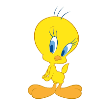Tweety, also known as Tweety Pie or Tweety Bird, is a yellow canary in the Looney Tunes and Merrie Melodies series.
LEARN MOREWubbzy
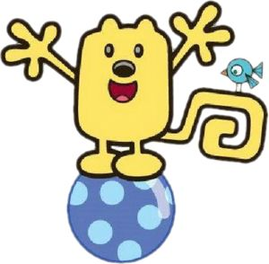Wubbzy loves to play with his best buddies Widget and Walden, who help him out of any sticky situation. Walden is a bookworm always in the library looking for an answer, and Widget likes to invent things
LEARN MOREBloo
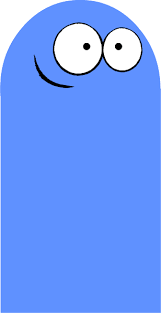Mac's imaginary best friend. Bloo is a blue, supple, domed cylinder not unlike a bollard with two eyes.
LEARN MORESonic
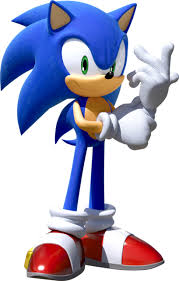Sonic the Hedgehog is a character created by the Japanese game developers Yuji Naka and Naoto Ohshima. He is the star of the Sonic the Hedgehog franchise and the mascot of the Japanese video game company Sega.
LEARN MOREGumball
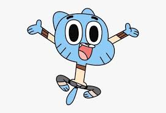No, this animated series is not about anthropomorphic chewing gum, it's about a young cat named Gumball Watterson. Gumball has a penchant for getting into trouble, often resulting from schemes he comes up with, but he never seems to learn his lesson.
LEARN MOREGenie
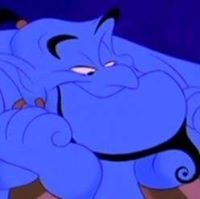Genie is the fun-loving, scene-stealing wisecracker who lives in the lamp and yearns to be free
LEARN MOREPink Panther

Genie is the fun-loving, scene-stealing wisecracker who lives in the lamp and yearns to be free
LEARN MOREWanda
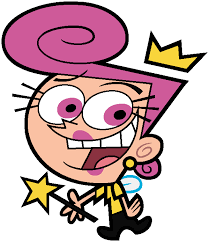Wanda Venus Fairywinkle-Cosma is the tritagonist of The Fairly OddParents alongside her husband Cosmo and one of the main characters in the series. She is also one of Timmy and Chloe's fairy godparents, along with her husband Cosmo, and her son Poof.
LEARN MORECourage
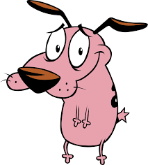He was abandoned as a puppy after his parents were sent into outer space by a crazed veterinarian. Soon after, he was found in an alleyway by Muriel Bagge (Thea White), a caring woman who decided to take Courage in as her own; the nature of this first meeting inspired her to give him his name.
LEARN MOREStarFire
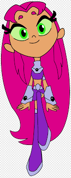Starfire is a superhero appearing in American comic books published by DC Comics. She debuted in a preview story inserted within DC Comics Presents #26 and was created by Marv Wolfman and George Pérez.
LEARN MORE